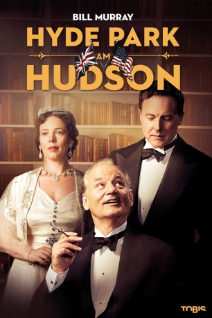

#5743 Hyde Park am Hudson
Alternativ: Hyde Park on Hudson
 
 IMDB-Wertung: 5.9 / 10
IMDB-Wertung: 5.9 / 10  Metascore: 0
Metascore: 0 
An einem Juni-Wochenende im Jahr 1939 – die große Wirtschaftsdepression ist gerade erst überwunden, und der Zweite Weltkrieg steht kurz bevor – erwarten US-Präsident Franklin D. Roosevelt und seine Gattin Eleanor auf ihrem Landsitz Hyde Park am Hudson hohen Besuch: Als erste britische Monarchen überhaupt beehren King George VI und seine Gemahlin Queen Elizabeth die USA mit einer geschichtsträchtigen Stippvisite. Und ein weiterer Gast weilt an diesem Wochenende auf dem Familienanwesen der Roosevelts: Margaret ‚Daisy’ Stuckley, eine entfernte Cousine des Präsidenten, mit der er eine Liebesaffäre unterhält. Es bahnt sich ein stürmisches Wochenende an mit allerhand Heimlichtuereien, verkrampften Picknicks, politischen Differenzen, Hot Dogs, britischem High-End-Snobismus und nächtlichen Eskapaden, das die Befürchtungen aller Beteiligten weit übertreffen wird und am Ende doch die beiden Nationen näher aneinander rücken lässt…
Jahr: 2012
Dauer: 94 Minuten
FSK: 0
Land: England Studio: TOBIS FilmTonspuren:
Untertitel: Deutsch,
Auflösung: 720p (1280x544) Größe: 2191 MB
Genre: Drama, Komödie, Geschichte, Biographie
Regisseur: Roger Michell
Drehbuch: Leone Marucci
Soundtrack:
Darsteller:
 Bill Murray als FDR
Bill Murray als FDR Laura Linney als Daisy
Laura Linney als Daisy Samuel West als Bertie
Samuel West als Bertie Olivia Colman als Elizabeth
Olivia Colman als Elizabeth Elizabeth Marvel als Missy
Elizabeth Marvel als Missy Olivia Williams als Eleanor
Olivia Williams als Eleanor Elizabeth Wilson als Mrs. Roosevelt
Elizabeth Wilson als Mrs. Roosevelt- Martin McDougall als Tommy
 Andrew Havill als Cameron
Andrew Havill als Cameron- Eleanor Bron als Daisy's Aunt
- Tim Beckmann als President's Aide #1
- Samantha Dakin als Mary the Maid
 Tim Ahern als Hungry Driver #1
Tim Ahern als Hungry Driver #1- Tommy Campbell als Hungry Driver #2
- Kumiko Konishi als Princess Te Ata
 Blake Ritson als Butler
Blake Ritson als Butler Parker Sawyers als Thomas
Parker Sawyers als Thomas- Elliot James als Well-wisher , uncredited
- Nancy Baldwin als Mrs. Astor
- Guy Paul als President's Aide #2
- Eben Young als President's Aide #3
- Buffy Davis als Cook
- Morgan Deare als Plumber
- Jeff Mash als Hungry Driver #3
- Kevin Millington als Hungry Driver #4
- Nell Mooney als Superstitious Maid
- Robert G. Slade als Waiter
- Jonathan Brewer als Ish-ti-opi
- James McNeill als Photographer
- The British Imperial Military Band als Brass Band #1
- The Amersham Band als Brass Band #2
- Mark Badham als US Marine , uncredited
- Kiri Bloom als Junior Cook , uncredited
- Chris Bowe als Town's Man , uncredited
- Robert Clayton als US Marine , uncredited
- Jason Durran als Nelson , uncredited
- Erkan Halil als Servant , uncredited
- Kevin Hudson als Reporter , uncredited
- Martin John King als Despatch Rider , uncredited
- Debbie J. Nash als Hyde Park Staff , uncredited
Datei: X:\2012(G-M)\Hyde Park am Hudson (2012, FSK0, 1280x544).mkv seit 16.03.2017
Festplatte: HD 2012(A-M)
 Es gibt insgesamt 112 Filme in der Gruppe '2012(G-M)'
Es gibt insgesamt 112 Filme in der Gruppe '2012(G-M)'